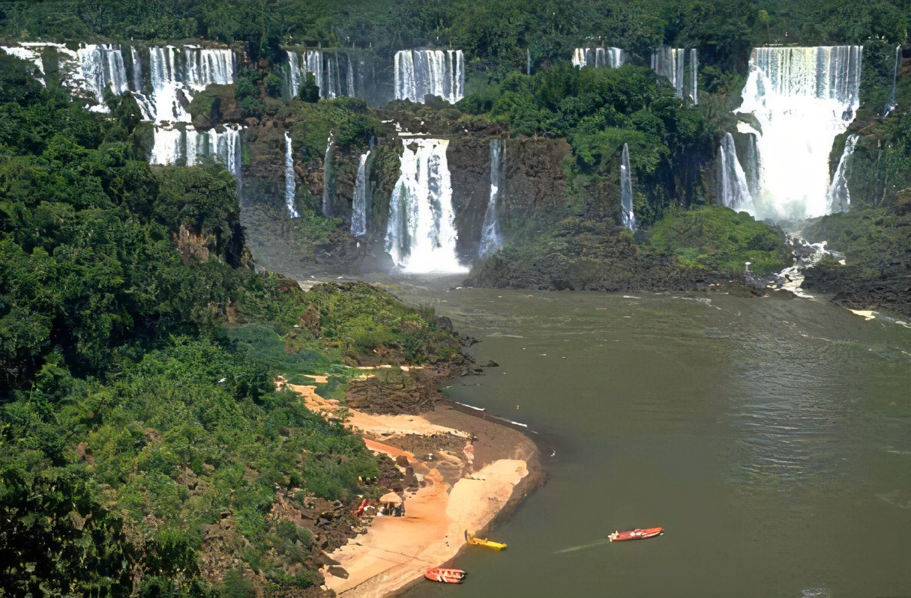

| Argentina, un país de vasta extensión territorial situado en el
extremo sur de América del Sur, presenta una riqueza climática excepcional que
abarca desde los áridos paisajes del noroeste hasta las frígidas tierras de la
Patagonia en el sur. Esta diversidad climática, moldeada por su extensa geografía y
su proximidad a distintas masas de agua, influye significativamente en la ecología,
la agricultura, la economía y la cultura del país. Explorar los distintos climas de
Argentina nos ofrece una ventana a la asombrosa variedad de paisajes y ecosistemas que
alberga este fascinante país sudamericano.
ARGENTINA
|
|
Clima Pampeano:
|
El clima pampeano es un tipo de clima templado que se encuentra en
la región central de Argentina, conocida como la Pampa Húmeda. Esta
región es una de las áreas más fértiles y productivas del país, y es
fundamental para la agricultura argentina.
|
Caracteristicas:
- Temperaturas:
- Veranos cálidos, inviernos suaves.
- Precipitaciones:
- Suficientes y bien distribuidas.
- Estacionalidad
- Cuatro estaciones definidas.
-
Vegetación:
-
Pastizales naturales, cultivos agrícolas.
|
|
|
Clima Subtropical Húmedo:
|
El clima subtropical húmedo se encuentra en el noreste argentino, caracterizado por su calidez y humedad.
|
Características:
- Temperaturas:
- Altas temperaturas y alta humedad.
- Precipitaciones:
- Precipitaciones abundantes durante todo el año.
- Estacionalidad:
- Estaciones bien marcadas, con veranos lluviosos e inviernos secos.
- Vegetación:
- Selva subtropical, biodiversidad vegetal.
|

|
|
Clima Subtropical con Estación Seca:
|
El clima subtropical con estación seca se encuentra en el norte argentino, con veranos cálidos y lluviosos
e inviernos secos.
|
Características:
- Temperaturas:
- Altas temperaturas en verano, inviernos suaves.
- Precipitaciones:
- Altas precipitaciones en verano, estación seca en invierno.
- Estacionalidad:
- Estación seca durante el invierno.
- Vegetación:
- Vegetación subtropical, adaptada a la estacionalidad de las lluvias.
|

|